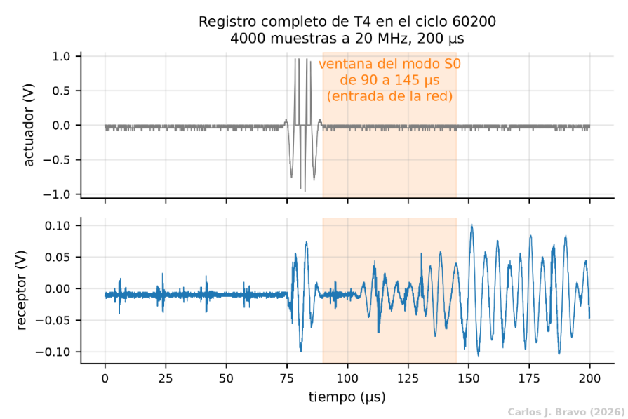
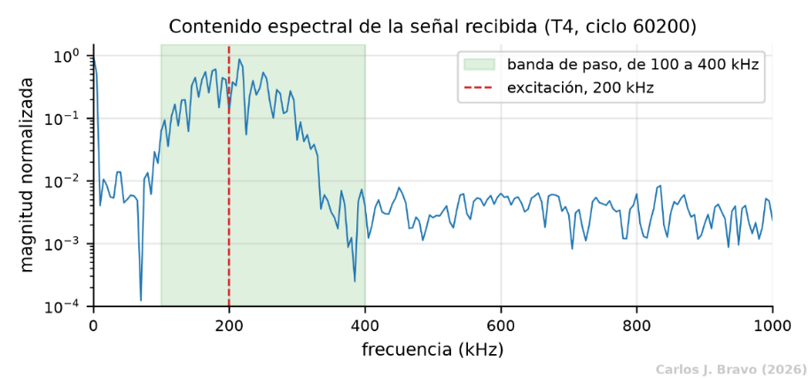
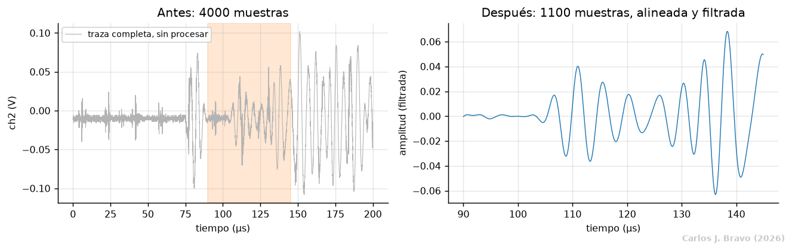
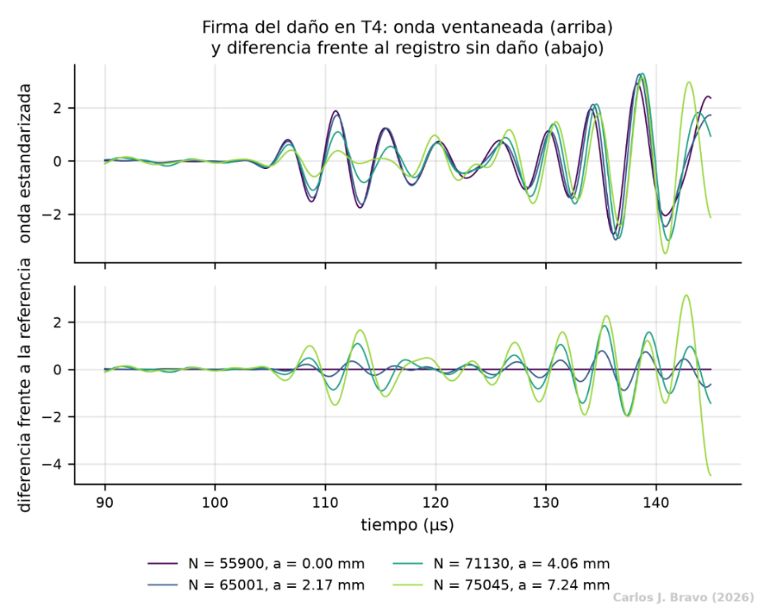
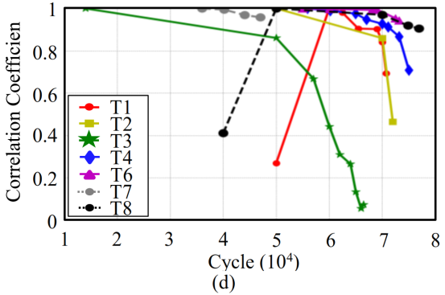
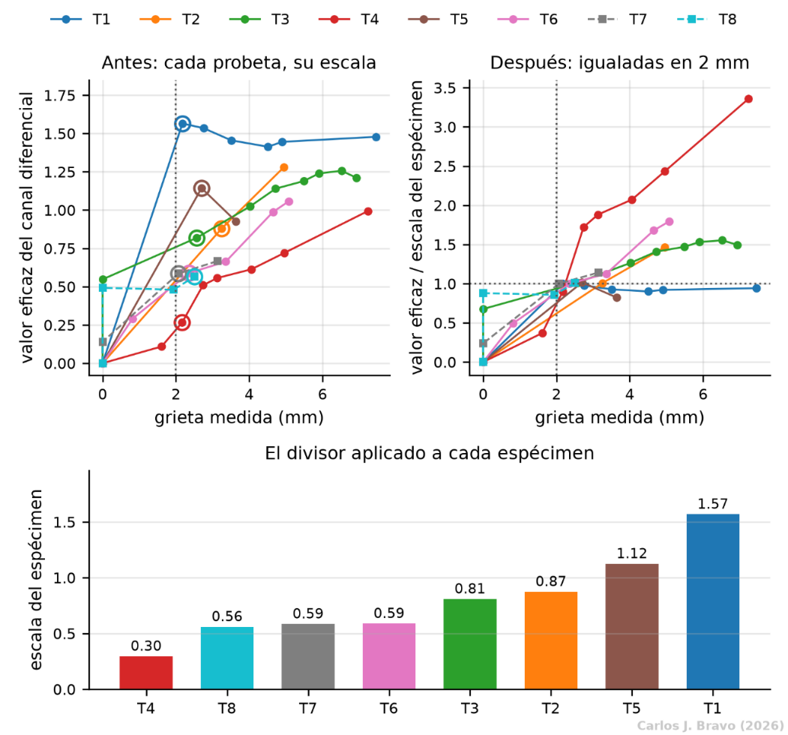

Tratamiento de la señal
Una red neuronal aprende de lo que le damos. Si le damos el registro tal como sale del sensor, aprenderá también el ruido, el pegado de cada pastilla y las rarezas de cada probeta. Esta parte explica, paso a paso, cómo se limpia la señal para que lo único que quede sea la huella de la grieta.
Por qué la señal necesita tratamiento
Cada registro dura 200 µs y contiene 4000 muestras. En ese intervalo pasan muchas cosas a la vez: el pulso eléctrico del emisor se cuela en el receptor, llega primero el paquete de onda que ha cruzado la zona de remaches y, detrás, una maraña de ecos que rebotan en los bordes de la chapa. Encima de todo eso hay ruido eléctrico.
La huella de la grieta, en cambio, es diminuta: un retraso de menos de un microsegundo y un ligero cambio de forma del primer paquete. Y hay un problema más serio todavía: dos probetas distintas, sin grieta ninguna, ya producen señales distintas, porque cada una tiene su propio par de sensores, a su propia distancia y con su propio pegado. Esa diferencia entre probetas es mayor que la que provoca la grieta. Si no se corrige, la red aprendería a reconocer probetas en lugar de grietas.

Los cinco pasos que siguen atacan esos problemas uno a uno. Todas las figuras usan T4, la probeta más representativa del conjunto: ocho medidas bien repartidas, desde 0 hasta 7.24 mm, y señal en todos sus ciclos.
Filtrado: quedarse con la frecuencia que importa
Por qué es necesario
El emisor lanza un tren de ondas centrado en 200 kHz. Todo lo que el receptor capta muy lejos de esa frecuencia no viene de la onda que nos interesa, sino de la electrónica de adquisición. Medido sobre la señal recibida, el contenido fuera de la banda de 100 a 400 kHz supone el 23.7% de la energía, y es ruido.
Qué se hizo
De dónde viene la idea
Filtrar es práctica común, y los tres métodos ganadores lo hacen con bandas equivalentes, entre 100 y 500 kHz o entre 150 y 350 kHz. La banda elegida aquí es intermedia entre ambas; lo que sí es una decisión propia es insistir en la fase nula.

Alineación: que todos los relojes empiecen a la vez
Por qué hace falta
El daño se manifiesta, entre otras cosas, como un retraso de la onda inferior a un microsegundo. El problema es que el sistema de adquisición tiene una incertidumbre de disparo del mismo orden: dos registros de la misma probeta pueden empezar a contar el tiempo con décimas de microsegundo de diferencia. Si no se corrige ese desfase, al comparar dos ondas mediríamos sobre todo el desajuste del reloj y no la grieta.
Qué causa el desfase y cómo se corrige
La causa es el disparo de la adquisición, no la grieta. Y aquí hay un truco útil: el canal del actuador repite exactamente el mismo tren de ondas en todos los registros y no lleva ninguna información del daño. Cualquier diferencia de tiempo que aparezca en ese canal es, por definición, desajuste de disparo.
De dónde viene la idea
La alineación la proponen Kong et al. (2020), segundo puesto del certamen, aunque ellos usan la posición del máximo absoluto de la señal. Esa regla aquí no funciona: el tren de excitación tiene dos picos casi iguales y, en T4, el máximo salta de uno a otro en siete de los ocho registros, lo que produce desplazamientos falsos de 81 a 125 muestras, entre 4 y 6 µs. Por eso se sustituyó por la correlación cruzada, que mira la forma completa.
Hay un matiz honesto que contar: medido sobre las ocho probetas, el desajuste real nunca supera una muestra, es decir, 0.05 µs. Los registros ya venían prácticamente alineados. El paso se conserva como salvaguarda, por si otro conjunto de datos no tuviera tanta suerte.
Ventaneo: recortar la parte que habla de la grieta
Por qué se recorta
Las ondas de Lamb viajan en varios modos a la vez, con velocidades distintas. El primero en llegar al receptor es el modo simétrico fundamental, llamado S0. Es el que porta la huella del daño de forma más limpia, porque llega antes de que empiecen los ecos de los bordes y la reverberación. Todo lo que llega después mezcla la grieta con la geometría de la chapa.
Cómo se eligió el tamaño
El paquete S0 llega entre los 100 y los 130 µs. La ventana se fijó de 90 a 145 µs, es decir, deliberadamente más ancha que el paquete. La razón es no imponer a la red un límite ajustado a mano: dentro de esa ventana, son las capas convolucionales las que aprenden qué tramo es informativo. El tamaño no salió de una búsqueda automática, sino de dónde llega el paquete con un margen a cada lado.
El resultado son 1100 muestras por canal, y se descarta el 72.5% de la traza: el silencio previo, el pulso que se cuela del emisor y la reverberación posterior.
De dónde viene la idea
Los tres ganadores también recortan el primer paquete, pero con criterios más ajustados: Youn et al. toman 400 muestras desde el inicio de la llegada, Kong et al. usan un rango fijo alrededor del S0 y Rao et al. un intervalo en torno al primer pico. Aquí la ventana es fija y más ancha porque el trabajo fino de selección lo hace la red.

Canal diferencial: mirar solo lo que ha cambiado
Por qué hace falta un segundo canal
Si comparamos a simple vista la onda de un ciclo sin grieta con la de un ciclo con 7 mm de grieta, se parecen muchísimo. La huella del daño está ahí, pero escondida bajo todo lo que la onda tiene de propio: el pegado de la pastilla, el ajuste de los remaches, la distancia del camino. Y esas cosas cambian de una probeta a otra más que la propia grieta.
La solución es restar. A cada onda se le resta el registro sano de su misma probeta. Lo que es común a los dos, es decir, todo lo que depende del montaje, se cancela. Lo que queda es lo que ha cambiado desde que la probeta estaba intacta.
Qué se gana
La red recibe dos canales a la vez: la onda estandarizada, tal cual, y su diferencia respecto del registro sano. El primero cambia poco a lo largo de la vida de la probeta; el segundo crece de forma ordenada con la grieta, como se ve abajo. Es mucho más fácil aprender de una señal que crece con lo que queremos medir que de una que apenas se mueve.

De dónde viene la idea
Comparar con el estado sano procede de Youn et al. (2020), primer puesto del certamen, que refieren sus características al registro sin daño. La diferencia aquí es que la resta se aplica a la forma de onda completa y se entrega a la red como un canal más, en lugar de resumirla antes en unos pocos números.
¿De dónde sale el registro sano?
El conjunto de datos no incluye un registro de referencia aparte, a pesar de que su documentación lo menciona. Así que el registro sano de cada probeta es su primer ciclo medido, que corresponde a una grieta nula: en T4, por ejemplo, el ciclo 55900.
Hay dos excepciones. En T8, el primer registro, el del ciclo 40000, no se parece a ningún otro de la misma probeta (correlación de 0.27 a 0.48, frente a 0.64 a 0.99 entre los demás). Esa misma rareza se ve en una figura del segundo puesto, reproducida abajo. Como está etiquetado con grieta nula, conservarlo equivaldría a enseñar a la red que una onda corrompida es una onda sana, de modo que se descarta y la referencia de T8 pasa a ser el ciclo 50000. La otra excepción está en T1, cuyas dos repeticiones del ciclo 50000 no son compatibles entre sí; para todas las referencias se usa siempre la primera repetición.

Estandarización y normalización: que un mismo valor signifique lo mismo
Este paso aplica dos escalados distintos, que se suelen confundir y conviene separar.
| Estandarización | Normalización por probeta | |
|---|---|---|
| A qué se aplica | A cada onda, por separado. | Solo al canal diferencial, una vez por probeta. |
| Qué hace | Resta la media de la onda y divide por su desviación típica. | Divide el canal diferencial por su valor eficaz en un estado de daño de referencia. |
| Qué elimina | La ganancia de acoplamiento del transductor, que depende del pegado y es información del sensor, no de la grieta. | La diferente sensibilidad de cada par de sensores al daño. |
| Cuándo ocurre | Antes de la resta del paso 4. | Después de la resta. |
Por qué no basta con estandarizar
Igualar la amplitud de las ondas no iguala el tamaño de sus diferencias. Con la grieta en 2 mm, el valor eficaz del canal diferencial va de 0.30 en T4 a 1.57 en T1, porque cada probeta está instrumentada sobre un camino distinto. Sin corregirlo, la red leería esa amplitud como longitud de grieta y se equivocaría de forma sistemática ante una probeta nueva.
El estado de referencia: 2 mm
La corrección divide el canal diferencial de cada probeta por su valor en la primera medida cuya grieta alcanza 2 mm, un estado de daño por el que pasan las ocho probetas. Así, un valor igual a la unidad significa lo mismo en todas. Dentro de la banda de 2 a 2.5 mm, la dispersión entre probetas pasa de un factor 5.9 a un factor 1.1.
La alternativa obvia sería dividir por el valor máximo de cada probeta, pero eso tiene una trampa. El máximo se alcanza en el último ciclo con señal, y las probetas de validación pierden la señal mucho antes: su última medida útil está en 3.14 mm en T7 y en 2.5 mm en T8, frente a los 5 a 7.5 mm del resto. Dividir por ese máximo inflaría su canal diferencial, y la red sobreestimaría justo las dos probetas con las que se juzga todo el trabajo.

De dónde viene la idea
La estandarización es una práctica estándar. La normalización por probeta, en cambio, es una aportación de este trabajo: ni los métodos del certamen ni el resto de la literatura revisada reescalan las señales entre probetas; se limitan a referirlas al registro sano de cada una.